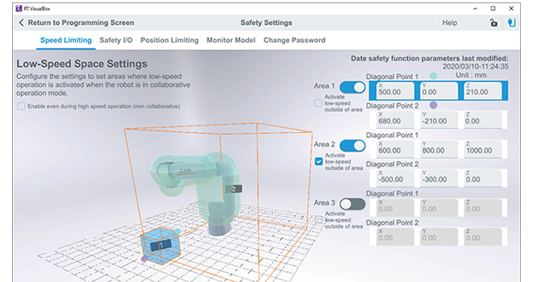
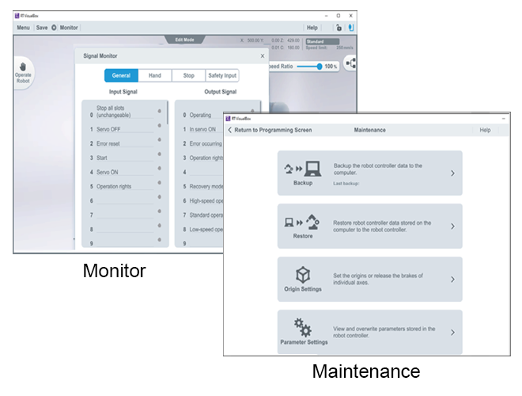

Robot Engneering software (MELFA)MELSOFT RT VisualBox

Hand settings
Set up grippers intuitively and easily.
- The ASSISTA Set-up wizard provides operators with an easier more intuitive methodology for gripper configurations.
- Used to configure the installation type, hand settings, workpiece settings, and workpiece grasp position.
- For recommended electric hands can easily be setup and configured for your application.


Vision settings
No Vision system expertise required.
The vision camera focus adjustment and work registration can be configured simply by touching the screen. This means that you can use it even without special robot knowledge.
Used to configure the vision sensor connection, pick-up point and workpiece identification, pattern identification settings.


Safety settings

Used to configure the mandatory settings of safety functions.
The following settings can be configured on the Safety Settings screen
- Speed limiting
- Safety I/O
- Position limiting
- Monitoring model
Monitor, Maintenance

The following items can be displayed with the monitoring function.
Position list
Variable monitor
Singal monitor
Error history
The actions in the table below can be carried out in order to conduct maintenance.
Backup
Restore
Origin settings
Parameter settings